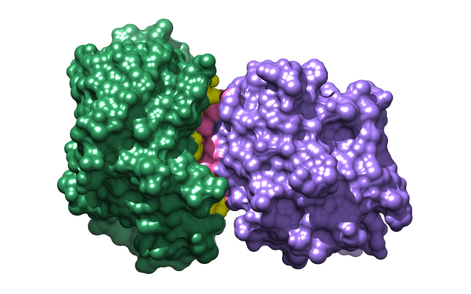
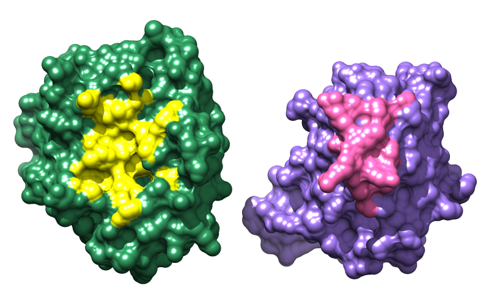
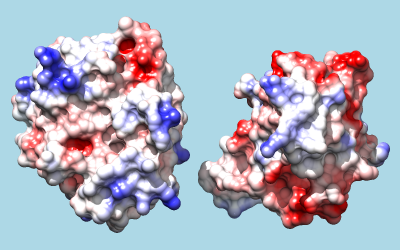
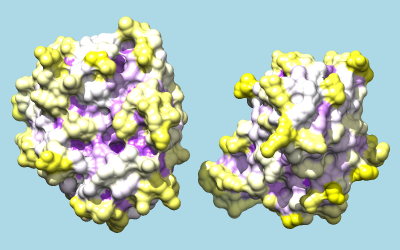

|  |
|  |
This tutorial describes how to reveal an interface by splaying it open like a book. The structures are shown as surfaces with interactive shadows. See also: Intersurf, presets, tips on preparing images
Start Chimera and show the Command Line (for example, with Favorites... Command Line). Fetch Protein Data Bank entry 1avx:
Command: open 1avxThe structure contains porcine pancreatic trypsin, chain A, complexed with a trypsin inhibitor from soybean, chain B. Move and scale (zoom) with the mouse to see how the two proteins fit together. Resize the window as desired, either by dragging its lower right corner with the mouse or by using the command windowsize. The window dimensions define the aspect ratio (width:height) of output images, but image resolution can be specified independently when an image is saved. An 800x500-pixel window was used for the example images at right.
In chain B, there is a break in the ribbon and a dashed line where atomic coordinates could not be resolved. Hide this dashed line “pseudobond” and split the model to facilitate moving chains independently:
Command: ~longbond
Command: split
The original model #0 is now split into model #0.1 containing chain A and model #0.2 containing chain B. Models are listed in the Model Panel (under Favorites in the menu).
Use the all-atoms preset, change to sticks, delete water, and color the two chains differently:
Command: preset apply int 2
Command: repr stick
Command: delete solvent
Command: color sea green #0.1
Command: color medium purple #0.2
Splitting is also one way to indicate that the molecular surface should enclose each chain separately instead of collectively. Show the surface:
Command: surface
One key to making figures is saving and restoring positions. For example, the following saves the current position and names it p1:
Command: savepos p1
After the view or individual structures have been moved around, the position can be restored with:
Command: reset p1
... or even restored gradually, over a specified number of frames:
Command: reset p1 80
You can save/restore multiple positions using different names, and positions are included in subsequently saved session files. To save your work at any point, save a session (see the File menu).
To open the interface, we will:
The first step will be done with the mouse, but we will create command aliases for the other two since they may be done many times starting from different initial orientations. To avoid typing long commands, you can copy text from this page and paste it into the Command Line:
Command: alias ^face-me set independent; turn y -90 model #0.1; turn y 90 model #0.2; ~set independent
Command: alias ^separate move x $1 model #0.2; center
**These aliases assume the complex is oriented so that #0.1 (trypsin, green) is on the left and #0.2 (inhibitor, purple) is on the right.** Aliases can be used in the Command Line, and face-me also appears in the Aliases menu; separate does not, because it requires also entering the distance of separation (Å). The “^” symbol means the alias should only be expanded when it appears at the beginning of a command. In the independent rotation mode, each model rotates about its own center rather than a single collective center.
Before using the aliases, generate initial positions by moving the complex with the mouse. If you have already separated the proteins and/or rotated them independently, first put the complex back together, for example:
Command: reset defaultThe default position is that without user-applied rotations and translations, as when the structures were first opened. For using the aliases, a good initial position of the complex has trypsin on the left and the inhibitor on the right, with the interface approximately edge-on (similar to the top image above, but could be rotated differently about the horizontal axis). When you have what seems to be a good initial position, save it, use the aliases to open the interface, and save the open position. For example:
Command: savepos closed
Command: face-me
Command: separate 18
Command: savepos open
You can start over by resetting to the closed position (or whatever you named it). An existing position can be overwritten by saving to the same name. However, don't worry about optimizing the positions for figures yet. The goal at this stage is to simplify opening/closing the interface to evaluate colorings.
Any one of the following three methods could be used to identify and color the binding interface. Remember to put the structures in the bound state (closed-interface position) before running calculations, and if trying different methods or parameter values, recoloring the proteins between trials as in the setup. Previous commands can be re-executed using the command history. (Advanced users may be interested in some additional aliases used during tutorial development.) Reset to an open-interface position to see the coloring results.
Method 1 (used for the figures) identifies atom-atom contacts with Find Clashes/Contacts or its command equivalent, findclash.
With the proteins in the bound state:Method 2 first calculates buried surface area, then uses the resulting per-atom values (assigned as atom attributes) to identify interface atoms.Command: findclash #0.1 test #0.2 intersub true overlap -1 hb 0 make false select trueIn the findclash command, the overlap and hb parameters are adjustable, with values of 0.0-(–1.0) Å and 0.0 Å, respectively, recommended for finding contacts. An overlap cutoff of –1.0 identifies pairs of atoms with VDW surfaces up to 1.0 Å apart. When the command is instead used to find only clashes (unfavorable, too-close contacts), hb values > 0.0 help to exclude H-bonding atom pairs. The two sets of atoms are specified with model numbers (e.g. #0.1), but chain identifiers could have been used instead (e.g. :.a), and if water had not been deleted, the calculation could have been limited explicitly to protein (e.g. #0.1&protein or :.a&protein).
Command: namesel contacts
Command: ~select
Command: color yellow contacts�.1
Command: color hot pink contacts�.2
With the proteins in the bound state:Command: measure buriedArea #0.1 #0.2
Command: color yellow #0.1@/buriedSESArea>1
Command: color hot pink #0.2@/buriedSESArea>1The total buried area and details of the calculation are given in the Reply Log. Different cutoff values could be used, but in this case, atoms with > 1.0 Å2 of solvent-excluded surface area buried in the interface are similar to the set of atoms found in the method 1 example. Although solvent, ions, and ligands are not enclosed in the displayed surfaces, the buried-area calculation will include all specified atoms. Thus it is important to specify only the intended atoms; for example, if nonprotein atoms were present:
Command: measure buriedArea #0.1&protein #0.2&protein
Method 3 identifies where surfaces are close to one another and does not involve atoms.
With the proteins in the bound state and surfaces shown:Command: measure contactArea #0.1 #0.2 2.5 color yellow offset 0
Command: measure contactArea #0.2 #0.1 2.5 color hotpink offset 0These commands identify where the surfaces are within 2.5 Å of each other. Again, different cutoffs could be used, but 2.5 gave a result roughly similar to the preceding examples. The specifications in the contact-area command (e.g. #0.1) refer to the surface models, which happen to have the same model numbers as the corresponding atomic structures.
Start the Side View (under Favorites in the menu) and place it beside the Chimera window so that you can see the structure from two directions at once. By default, Chimera uses perspective, in which nearer parts of structures appear larger. This enhances 3D perception, but subtly distorts structures as the eye proceeds from the center of the Chimera window towards the edges. The orthographic projection (no perspective) may be better for certain images such as side-by-side comparisons:
Command: set projection ortho
Continue translating, rotating, and zooming with the mouse, saving and resetting positions, and using the aliases to generate final views. Starting from a position with the intact complex, the face-me alias should only be used once, since it applies a 90° rotation to open the interface. However, it is fine to use separate multiple times, or scale or translate the view as a whole using the mouse (carefully!) and/or commands, for example:
Command: move x -8
Command: scale 1.4
Command: move y 2
It is prudent to save your favorite views as positions, then save a session (and save a session again after incorporating any finishing touches). You can overwrite an existing position or session by using the same name.
Many different visual effects can be applied, and choosing which to apply depends on both personal taste and what the image is meant to illustrate. The example images above were made with smooth molecular surfaces, a white background, and shadows:
Command: setattr s density 8
Command: back solid white
Command: set shadows
The vertex density of a molecular surface (default 2) controls the fineness of triangulation, with higher values giving a greater number of smaller triangles and a smoother-looking surface.
|  |
|  |
Of course, many other combinations of effects and coloring schemes are possible. Just to name a few, surfaces could be colored to show hydrophobic/hydrophilic compatibility or electrostatic complementarity as in the Surface Properties tutorial, conservation within associated sequence alignments as in the Sequences and Structures tutorial, or concavity/convexity as in the Attributes tutorial, part 2. A color key and text could be added, as in the B-factor Coloring tutorial.
If a coloring scheme includes white, it may be helpful to make the background a different color:
Command: back solid light blue
To color by Coulombic electrostatic potential:
Command: coulombic -10 red 0 white 10 blue
The result shows a predominantly positive protuberance on the inhibitor (right) interacting with a primarily negative pocket on the enzyme (left), with the opposite charge pattern on surrounding areas.
To color by per-residue concavity/convexity, open the Attribute Calculator (Tools... Structure Analysis... Attribute Calculator). Calculate a new attribute named convexity for residues using the Formula
residue.areaSAS/residue.areaSESValues of convexity > 1 represent convex areas, while values < 1 represent concave areas. Click OK to perform the calculation and assignment. A warning message will appear because some residues have an areaSES of zero, resulting in a divide-by-zero error. However, just close the warning dialog; values have been assigned correctly to the remaining residues. The coloring command could be something like:
Command: rangecolor convexity min purple 1 white max yellow
The result mainly serves to emphasize what is already evident from the shadowed surfaces: that a knobby protuberance on the inhibitor plugs into a socket on trypsin. The Attributes tutorial, part 2 describes showing per-atom rather than per-residue convexity, but the results are similar.
{kind=link}
{kind=link}